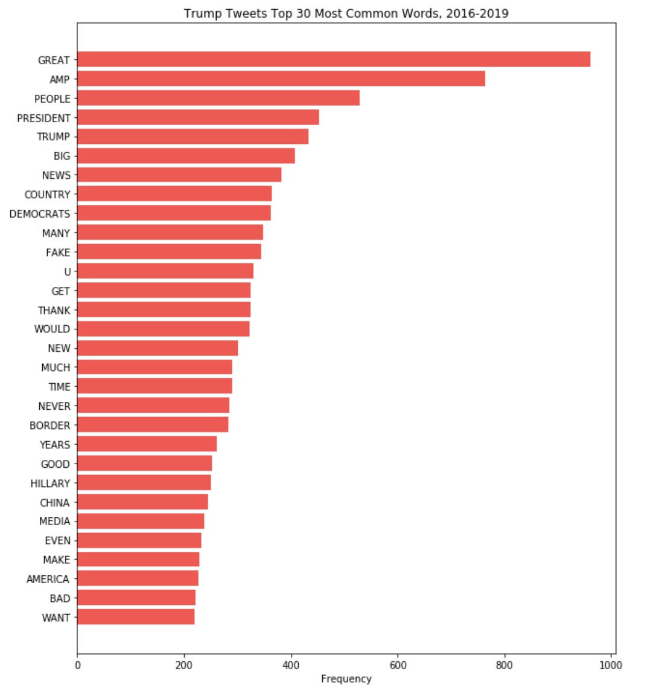

Exploratory Data Analysis
Data Cleaning and Reconciliation
We cleaned the text data in the Trump Tweets dataset by removing all non alpha-numeric characters and English stop words, as well as standardizing case, using a function (string_manipulation) developed for a project in a kaggle competition.
Because Trump tweets on non-business days, we standardized the dates across both the intraday S&P 500 dataset and the Trump Tweets dataset by dropping rows in the Trump Tweets dataset that did not correspond to a business day on which intraday S&P 500 index metrics were calculated, and then dropped rows in our S&P 500 dataset whose associated dates did not correspond with the remaining Trump Tweets dataset. We carried out this identical procedure to reconcile dates between the intraday VIX dataset and the Trump Tweets dataset.
In order to understand the immediate impact of Trump’s tweets on market volatility, we linked S&P 500 index metrics and Trump’s tweets, as well as VIX data and Trump’s tweets at the minute level using datetime objects, resulting in two datasets. One dataset contains each Trump tweet matched with the S&P 500 index metrics corresponding to the exact time and date the tweet was posted, and another contains each tweet matched with the VIX metric corresponding to the exact minute and date Trump published the tweet.
Finally, we created a function (get_perc_change_after_time (for the S&P dataset), get_perc_change_after_time_vix (for the VIX dataset)) that calculates the percent change between the S&P 500 / VIX index metric the minute Trump posted the tweet and a user designated number of minutes after the tweet was published so we can understand the impact of Trump’s tweets on market volatility at various timeframes after posting.
Data Exploration
Our data exploration was made up of three different stages: exploring the S&P data and VIX data, exploring the tweet data, and exploring the interactions and relationships between the two combinations of datasets (Trump tweets and S&P, Trump tweets and VIX).
We also explored the text data of Trump’s tweets, examining the most frequent words and building a Word2Vec model that allows us to see the degree to which words are associated with one another in Trump’s tweets.
Figure 1.1: VIX 1 and 5 Minute Percent Change After Trump Tweets
Figure 1.2: VIX Intraday Time Series
The distribution of percent changes has a bell-shaped distribution that seems to be somewhat more heavy-tailed than a normal distribution, especially for 5 minutes post-tweet, which also has greater variance (this can be investigated further). We randomly chose 3 days to demonstrate the microfluctuations throughout 24 hours that could be impacted by the President's tweets, since we felt that interday data did not show this. The intraday time series shows microfluctuations throughout the day, with 11/11 and 11/08 demonstrating a downward trend throughout the day and 11/05 ending with an upward tick.
Figure 2.1: S&P 1 and 5 Minute Percent Change After Trump Tweets
Figure 2.2: S&P Intraday Time Series
The distribution of percent changes has a bell-shaped distribution. The percent change at the 5-minute level seems to have greater variance. We randomly chose 3 days to demonstrate the microfluctuations throughout 24 hours that could be impacted by the President's tweets, since we felt that interday data did not show this. The intraday time series shows microfluctuations throughout the day, with 11/06 ending neutrally, 11/05 ending in the negative, and 11/04 ending with positive changes.
Figure 3: Trump Tweets Top 30 Most Common Words, 2016-2019
The bar graph on the left shows the most common words that have appeared in President Trump’s tweets from 2016-2019. Some of them, such as “great” and “big”, could be helpful in indicating sentiment of tweets. “Amp” corresponds to ampersand, which is not so important in this analysis. Other words are highly political—”democrats” and “Hillary”. In general, it seems that individual words have more political face value, rather than economic correspondence, so it will be interesting to see how they match up to tweets that impact the market down the line.
The cleaned text data in President Trump’s tweets ranged from only 1 character to over 200 characters that are close to the Twitter character limit. The distribution of the number of characters of his tweets after cleaning the text shows a distinction between the two types of tweets: concise tweets with a small number of words that say things like ‘READ THE TRANSCRIPT!” and longer tweets that are closer to the Twitter character limit, which usually contain more thorough messages than the shorter tweets. There are not many tweets in the 25-75 characters range, the 100 to 150 characters range, and the 175-225 characters range. This trend may become helpful for modeling.
Figure 4: Distribution of Number of Characters in President Trump's Tweets
Figure 5: Characters in Trump's Tweets vs. S&P Percent Change One Minute after Tweet
Figure 6: Characters in Trump's Tweets vs. VIX Percent Change One Minute after Tweet

The above scatterplot shows there is no relationship between length of tweet and VIX/S&P 500 percent change one minute after President Trump tweets, and thus the relationship is probably in the text or content of his tweets.
Scatter Plot of PCA Projection of Word2Vec Model Trained on Trump's Tweets
From this word vector plot we can see a number of words in the bottom left of the plot that relate to the economy. These relationships can be potentially explored in our models.


{kind=link}
{kind=link}